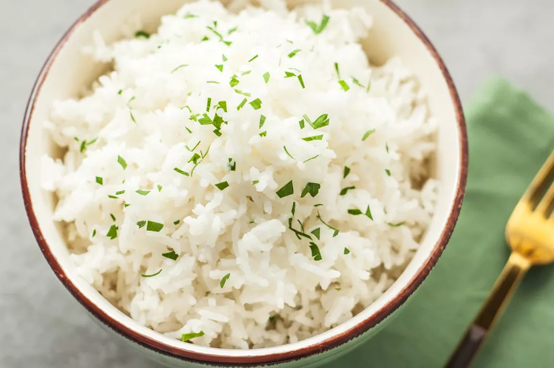

White Rice Recipe

A basic everyday white rice recipe
ingredients
- 1 cup long-grain white rice
- 2 cups water
- 1/2 teaspoon salt
- 1 tablespoon unsalted butter, optional
- 1 tablespoon finely chopped parsley, optional
instructions
- Gather the ingredients.
- Rinse the rice under cold water until the water runs clear. Drain in a colander and set aside.
- In a medium saucepan, bring the water to a boil. Add the salt, stir, and then add the rinsed and drained rice. Stir with a fork.
- Reduce the heat to low, cover, and let simmer for 20 minutes. Check it after 15 minutes to see if all the water has evaporated. If it has, the rice is ready. If not, replace the lid and let the rice simmer an additional 5 minutes.
- Remove from the heat and fluff with a fork. Transfer to a plate and serve garnished with butter and parsley, if desired.